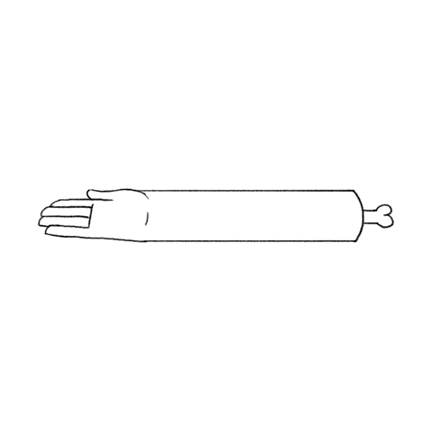

La animación 2D es uno de los estilos de animación más antiguos y con el tiempo ha mejorado mucho.Ahora verás características y cómo ha mejorado este estilo de animación 2D

Este es el tipo tradicional de animar. Se hacía con el método de sucesión de imágenes por lo que dibujaban cuadro por cuadro hacía falta tiempo y paciencia al tener que hacer cuatro imágenes por segundo mínimo para así poder hacer la ilusión de movimiento y vida engañando al ojo humano

Volver a la página principal